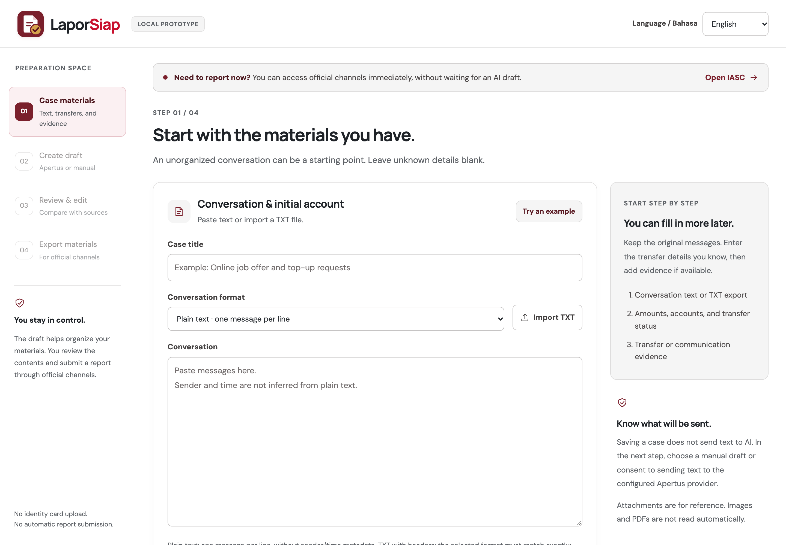
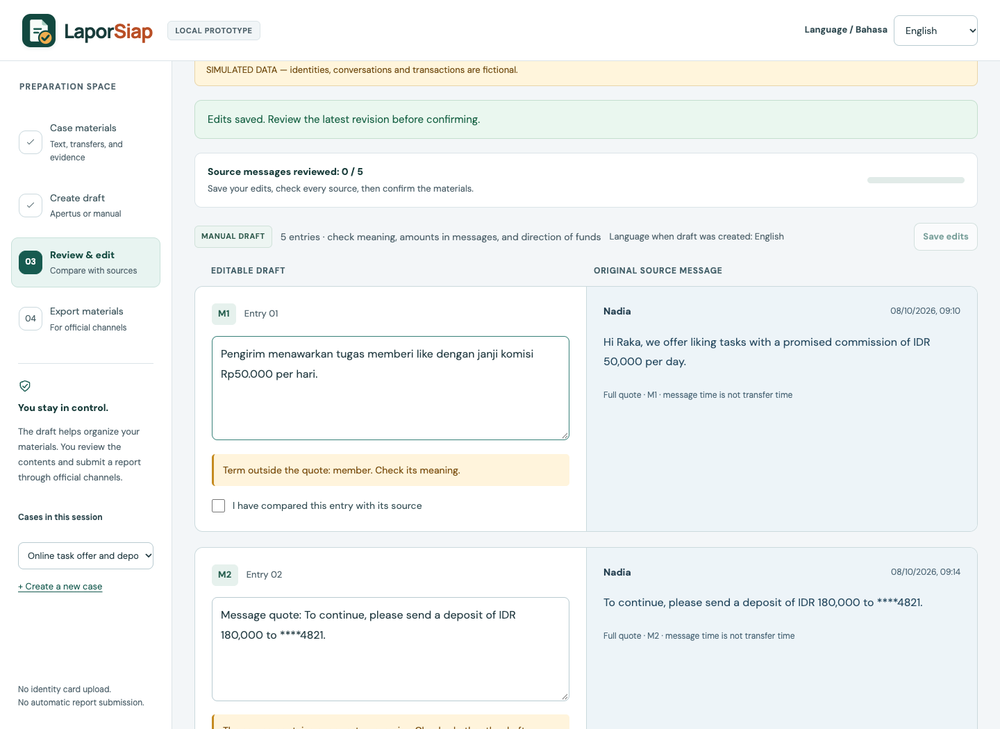

LaporSiap helps people in Indonesia who were targeted by part-time-job and “top-up” scams prepare a chronology, transfer list and evidence pack for the official channel, OJK’s Indonesia Anti-Scam Centre (IASC).
IASC asks for a chronology, transaction details and evidence; it received 637,055 reports between 22 Nov 2024 and 31 Jul 2026 [1]. What people actually hold is an untidy chat. LaporSiap lets them paste it, record the transfers they know, and get an Apertus-drafted chronology where every entry is bound to its original message by ID. The model writes only short descriptions; quotes are re-attached locally from the source, so the model can never alter evidence. Totals are computed by code. A person must confirm every entry before PDF/TXT/ZIP export unlocks.


a) On-premise — primary target. One Docker Compose stack runs the app and PostgreSQL on the organisation’s own machine. deploy/compose.gpu.yaml adds the official Apertus vLLM runtime, pinned in deploy/gpu-lock.json, sharing the app’s private network namespace; inference binds 127.0.0.1 only. b) Air-gapped — supported once images and weights are pre-loaded: the full manual workflow needs zero network, and AI needs only the local endpoint (LLM_BASE_URL accepts plain HTTP solely for loopback/private addresses).
| Phase | External dependency | Data sent |
|---|---|---|
| Build | Docker Hub images (golang, node, postgres), Go module proxy, npm registry | None — public packages only |
| Setup (AI) | Hugging Face gated weights download | Owner’s HF token |
| Runtime | Only the configured Apertus endpoint | Prompt + masked message text of one consented case |
swiss-ai/apertus-v1.5-8b, swiss-ai/apertus-v1.5-70bbilingual-v6-time-preserved, embedded in the binary; SHA-256 exposed at /api/policy and stored with every draftWhy Apertus. Open weights and open training data mean a public-interest operator in Indonesia can self-host it, so victims’ chats need not leave their infrastructure. Indonesian and English worked without fine-tuning.
aisingapore/Qwen-SEA-LION-v4-32B-IT; our model-identity check rejected it.All data is original and synthetic (fictional Nadia/Raka, fictional banks, masked accounts) under CDLA-Permissive-2.0: the 12-case fixture docs/evaluation/bilingual-safety-v1.json, 13 manual scenarios and 8 importable chats in docs/testing/. No real victim data, no personal data, no human subjects. Model outputs are kept as evidence and retain upstream rights.
Task: one chronology entry per source message. Metrics: (1) output contract — strict schema, source binding, order, preserved time phrases, model identity; (2) per-entry semantic review against fixture criteria; (3) latency and token cost. Setup: frozen fixture (SHA-256), prompt v6, temperature 0, one attempt per case per model, models interleaved, no retries, run 13 Oct 2026 through the app’s own provider path; the 6 cases the 70B gateway rejected were diagnosed and rerun once on 14 Oct (31 requests in total).
| Setup | Contract passed | Semantic review (clean / minor / material) | Mean latency | Cost per case* |
|---|---|---|---|---|
| Baseline: manual draft, no AI | n/a | quotes only — user writes every entry | — | 0 |
| Apertus v1.5 8B | 12 / 12 | 7 2 3 | 5.9 s | ≈ $0.00011 |
| Apertus v1.5 70B | 12 / 12 (6 after one rerun) | 7 5 0 | 2.2 s | ≈ $0.00105 |
*Catalog token prices, not an invoice. Material 8B errors: lost “previously said” attribution on a corrected amount (EN + ID); mixed two messages and invented a step (privacy case, ID). 70B 400 diagnosis: the gateway claimed the system prompt was not a plain string although it was; an identical retry returned HTTP 200 — a provider-side fault, not the model or the app. LaporSiap does not auto-retry; the user retries or drafts manually.
Engineering checks: Go unit and PostgreSQL integration tests with the race detector, architecture-boundary checks (backend and frontend), 13 browser regressions — all green in GitHub Actions CI on the submitted commit.
Value, cost and scale. Primary users: job-seekers who transferred money to a part-time-job or top-up offer, and family members helping them. A case is ≈ 870 input + 110 output tokens. At 10× volume — 1,000 → 10,000 cases/day — hosted 8B costs ≈ $1.1/day versus ≈ $10.5/day for 70B. Self-hosted cost is GPU-hours rather than tokens (4× H100 for 70B ≈ $16/h list price; 8B fits one GPU). The Go API is stateless apart from PostgreSQL; AI concurrency, daily quotas and storage caps are configuration.
# app (Docker, any x86/ARM machine — tested on an 8 GB Mac) cd track_2b && make run # → http://localhost:8787, manual flow needs no AI export LLM_NAME=swiss-ai/apertus-v1.5-8b LLM_BASE_URL=https://api.publicai.co/v1 LLM_API_KEY=… # model comparison (no server or database needed) cd src/laporsiap_BE && go run ./cmd/modelcompare # dry run, 0 API calls go run ./cmd/modelcompare -live # 24 requests, ≈ USD 0.03
Evidence: output/evaluation/model-compare-2026-10-13T11-47-19Z/ — comparison.md, semantic-review.json, per-case JSON, frozen fixture and prompt. Temperature 0, but hosted outputs can still vary. Commit f66aa78 or later on main.
deploy/GPU-PROOF.txt.Coding assistant declaration. Built with Claude Code (Anthropic) for implementation, tests and documentation; design decisions, review and commits by the team. License: documentation CC-BY-4.0 · code Apache-2.0 · synthetic data CDLA-Permissive-2.0.